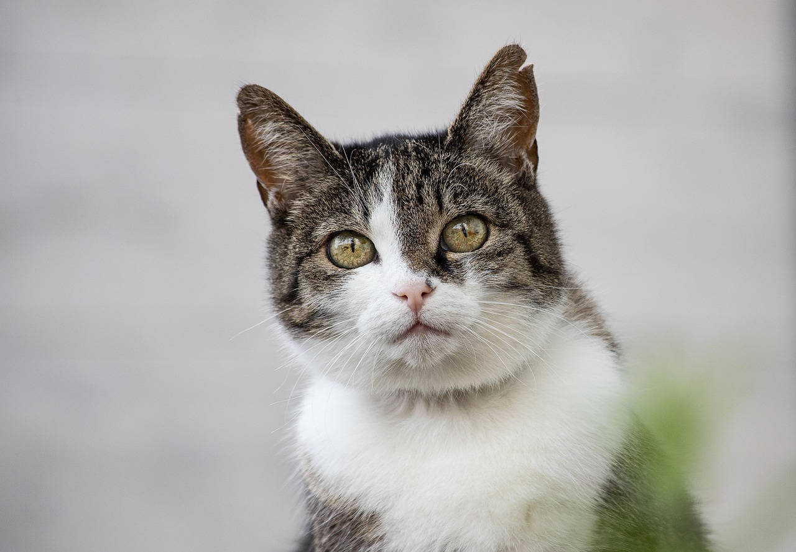

OS ANIMAIS
Os animais são seres vivos que possuem algumas características em comum: nascem, desenvolvem-se,
reproduzem-se e morrem. O conjunto dessas etapas é chamado de ciclo vital.
Eles podem ser classificados em vertebrados, invertebrados, selvagens, domésticos, terrestres,
aquáticos, aéreos, entre várias outras formas. Agora falando de uma forma mais formal ou em uma
linguagem mais técnica: O Reino Animal, Animalia ou Metazoa é composto por organismos heterótrofos,
ou seja, aqueles que não produzem o próprio alimento. Essa é uma das principais características do
grupo e que os diferencia de outros seres vivos, como dos vegetais. Os seres que pertencem ao
reino animal são eucariontes e pluricelulares. Eles possuem capacidade de locomoção e grande
parte fazem reprodução sexuada. Os animais são classificados em diversos filos, sendo muitos deles
animais invertebrados (aqueles que não possuem vértebras). Os animais vertebrados que possuem
crânio, vértebras e coluna dorsal pertencem ao Filo dos Cordados. O desenvolvimento embrionário
determina características importantes para sua classificação, todos os animais possuem o estágio
da blástula no seu desenvolvimento.
Alguns animais para admirar
Os Gatos

FONTE: Imagem de minka2507 por Pixabay
O gato (nome científico: Felis silvestris catus) ou gato doméstico é um mamífero carnívoro da família
dos felídeos, muito popular como animal de estimação. Ocupando o topo da cadeia alimentar, é predador
natural de diversos animais, como roedores, pássaros, lagartixas e alguns insetos. Segundo pesquisas
realizadas por instituições norte-americanas, os gatos consistem no segundo animal de estimação mais
popular do mundo, estando numericamente atrás apenas dos peixes de aquário. Consta em trigésimo
nono na lista das 100 das espécies exóticas invasoras mais daninhas do mundo da União Internacional
para a Conservação da Natureza (UICN). A primeira associação dos gatos com os humanos da qual se tem
evidência ocorreu há cerca de 9 500 anos, período mais antigo ao estimado anteriormente, que oscilava
entre 3 500 e 8 000 anos. A subfamília dos felíneos (Felinae), que agrupa os gatos domésticos, surgiu
há cerca de 12 milhões de anos, expandindo-se a partir da África subsaariana até alcançar as terras do
atual Egito. Acredita-se que o gato-selvagem-africano (Felis silvestris lybica) era seu antepassado
imediato. Adicionalmente, evidências genéticas assinalam que os gatos domésticos atuais partilham
procedência direta com os gatos selvagens do Oriente Médio.
Os Coelhos
FONTE: Imagem de Pixamio por Pixabay
Os coelhos são uma espécie de mamíferos quadrúpedes da ordem dos lagomorfos pertencente à família dos
leporídeos, em geral dos gêneros Oryctolagus e Sylvilagus. Caracterizam-se pelas orelhas e patas
compridas e vasta pelagem. Esses pequenos mamíferos encontram-se facilmente em muitas regiões do
planeta. São animais herbívoros utilizados pelo homem para alimentação, o pêlo para vestuário ou
comumente como cobaias em estudos científicos. O ser humano introduziu o coelho-europeu na Austrália
no século XIX, em um episódio que perturbou o meio ambiente naquele país. Ao chegar na Austrália, o
coelho-europeu multiplicou-se com uma taxa muito elevada por não ter predador natural, e se
transformou num empecilho que prejudicou economicamente a agricultura. A totalidade dos esforços para
o controle da situação não tiveram utilidade. Mas um dia chegou a disseminação da mixomatose
infecciosa. A mixomatose infecciosa é uma doença endêmica entre os coelhos brasileiros. Porém, o
índice provável de fatalidade no coelho-europeu foi de infelizmente 99% dos casos.
Os Golfinhos
FONTE: Imagem de PublicDomainImages por Pixabay
Os golfinhos, delfins, peixes-botos, botos ou toninhas são animais artiodátilos pertencentes ao grupo
dos cetáceos que possuem 10 famílias, como Delphinidae, Platanistidae e Iniidae. São perfeitamente
adaptados para viver no ambiente aquático, sendo que existem 77 espécies conhecidas de golfinhos de
água salgada e água doce. A espécie mais famosa é a Delphinus delphis. É importante notar que
odontocetos e golfinhos são sinônimos. São nadadores exímios, às vezes saltando até cinco metros
acima da água. Podem nadar a uma velocidade de até 40 quilômetros por hora e mergulhar a grandes
profundidades. Sua alimentação consiste basicamente de peixes e lulas. Podem viver de 20 a 35 anos
e dão à luz um filhote de cada vez. Vivem em grupos, são animais sociáveis, tanto entre eles, como
com outros animais e humanos. Sua excelente inteligência é motivo de muitos estudos por parte dos
cientistas. Em cativeiro é possível treiná-los para executarem grande variedade de tarefas,
algumas de grande complexidade. São extremamente brincalhões, pois nenhum animal, excepto o Homem,
tem uma variedade tão grande de comportamentos que não estejam diretamente ligados às atividades
biológicas básicas, como alimentação e reprodução. Possuem o extraordinário sentido de ecolocalização
ou biossonar ou ainda orientação por ecos, que utilizam para nadar por entre obstáculos ou para caçar
as suas presas.
Os Patos
FONTE: Imagem de Alexa por Pixabay
Pato é o nome comum para numerosas espécies de aves aquáticas pertencentes à família Anatidae. Os
patos são menores e de pescoço mais curto que os cisnes e gansos, que são os membros da mesma
família. São divididos em muitas subfamílias, sendo principalmente aves aquáticas que podem ser
encontradas tanto em ambientes com água doce quando com água salgada. No Brasil adotou-se o uso
da palavra marreco ou sua correspondente no gênero feminino para designar os patos que não são o
Cairina moschata e suas variações. De acordo com o que é difundido, os marrecos são semelhantes aos
patos, porém menores, tendo entre 35 e 50cm de comprimento enquanto os patos poderiam chegar a até
80cm. O próprio significado da palavra "Marreco" de acordo com o dicionário Michaelis seria
"Denominação comum aos machos das aves anseriformes de pequeno porte, de gêneros variados, da família
dos anatídeos, de distribuição cosmopolita". Outras características enfatizadas para se criar essa
diferença seriam a falta de carúncula(presentes apenas nos patos da espécie nativa Cairina moschata),
o ângulo formado pela cauda e também o formato do bico que seria mais achatado e liso nos marrecos.
As tartarugas
 FONTE: Imagem de Pixabay
FONTE: Imagem de Pixabay
A tartaruga-comum (nome científico: Caretta caretta), também chamada tartaruga-marinha-comum,
tartaruga-cabeçuda, tartaruga-mestiça, carebadura, careba-amarela, tartaruga-amarela, tartaruga-avó,
avó-de-aruanã ou apeia, é uma espécie de tartaruga marinha pertencente à família dos queloniídeos
(Cheloniidae) Habita no oceano Atlântico, Pacífico e Índico, e no Mediterrâneo Actualmente é a única
espécie do género Caretta. Passa a maior parte da sua vida em habitats marinhos e estuarinos, e as
fêmeas só vêm à praia para desovar. O seu potencial de reprodução é extremamente baixo; as fêmeas
põem em média quatro ninhadas de ovos e posteriormente passam por um período de aquiescência no qual
não põem ovos durante dois ou três anos. A tartaruga-marinha-comum atinge a maturidade sexual entre
os 17 e os 33 anos e a sua expectativa de vida é de 47 a 67 anos. As tartarugas adultas medem em
média 90 centímetros de comprimento e têm um peso médio de 135 quilos, embora também se tenham
registado exemplares maiores com um comprimento de até 213 centímetros e um peso de até 545 quilos.
A cor da pele varia entre amarelo e castanho, e a carapaça é tipicamente castanha-avermelhada. A
diferença mais notável entre fêmeas e machos é que os machos têm caudas mais grossas e carapaças
mais curtas do que as fêmeas. Não existe dimorfismo sexual entre as fêmeas e machos juvenis.
É uma espécie omnívora, que se alimenta principalmente de invertebrados que vivem no leito marinho.
As suas mandíbulas são grandes e poderosas e servem como uma ferramenta eficaz para desfazer as
presas. As tartarugas recém-nascidas têm vários predadores e os ovos são especialmente vulneráveis
aos predadores e organismos terrestres. Quando atingem a idade adulta, o seu enorme tamanho faz com
que os seus predadores se limitem basicamente aos grandes animais marinhos, como os tubarões. É
considerada uma espécie em perigo de extinção pela União Internacional para a Conservação da
Natureza. Os equipamentos de pesca deixados ao abandono são um dos principais factores responsáveis
por numerosas mortes de tartarugas marinhas, incluindo a C. caretta. Em certos casos, também podem
afogar-se quando ficam presas nas redes de arraste. Por forma a reduzir a mortalidade, são utilizados
nas redes dispositivos que excluem as tartarugas marinhas das redes de pesca, o que lhes proporciona
uma via de escape caso fiquem presas. A perda de praias adequadas para a desova e nidificação, e a
introdução de predadores exóticos afectam consideravelmente as populações de C. caretta. Os esforços de
conservação requerem a cooperação internacional, já que estas tartarugas vagueiam por vastas áreas e
as praias de desova essenciais para a sua reprodução estão disseminadas por muitos países.
Voltar ao início da página